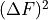
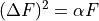
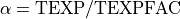

Filter and FilterList definitions¶
Code author: Hugo Plombat - LUPM & Wilfried Mercier - IRAP <wilfried.mercier@irap.omp.eu>
Base classes used to generate resolved stellar and SFR maps with LePhare or Cigale SED fitting codes.
-
class
galaxy.SED.filters.Filter(filt, file, errFile, zeropoint, ext=0, extErr=0, texpFactor=1)[source]¶ Bases:
objectBase class implementing data related to a single filter.
-
__init__(filt, file, errFile, zeropoint, ext=0, extErr=0, texpFactor=1)[source]¶ Code author: Wilfried Mercier - IRAP <wilfried.mercier@irap.omp.eu>
Initialise filter object.
- Parameters
filt (str) – filter name
file (str) – data file name. File must exist and be a loadable FITS file.
errFile (str) – error file name. File must exist and be a loadable FITS file. Error file is assumed to be the variance map.
zeropoint (float) – filter AB magnitude zeropoint
ext (int) – (Optional) extension in the data FITS file
extErr (int) – (Optional) extension in the error FITS file
- Raises
TypeError –
if filt is not of type str
if zeropoint is neither an int nor a float
-
_checkFile(file, *args, **kwargs)[source]¶ Code author: Wilfried Mercier - IRAP <wilfried.mercier@irap.omp.eu>
Check whether a file exists.
- Parameters
file (str) – file name
- Returns
True if the file exists
False otherwise
- Raises
TypeError – if file is not of type str
-
_loadFits(file, ext=0, **kwargs)[source]¶ Code author: Wilfried Mercier - IRAP <wilfried.mercier@irap.omp.eu>
Load data and header from a FITS file at the given extension.
- Parameters
file (str) – file name
ext (int) – (Optional) extension to load data from
- Returns
None, None if the file cannot be loaded as a FITS file or if the hdu extension is too large
header, data
- Return type
astropy Header, ndarray
- Raises
TypeError – if ext is not an int
ValueError – if ext is negative
-
static
_mask(arr, mask, *args, **kwargs)[source]¶ Code author: Wilfried Mercier - IRAP <wilfried.mercier@irap.omp.eu>
Apply the given mask by placing NaN values onto the array.
- Parameters
arr (ndarary) – array to mask
mask (ndarary[bool]) – mask with boolean values
- Returns
array with masked values
- Return type
ndarray
-
-
class
galaxy.SED.filters.FilterList(filters, mask, code='cigale', redshift=0, **kwargs)[source]¶ Bases:
objectBase class implementing the object used to stored SED fitting into.
-
__init__(filters, mask, code='cigale', redshift=0, **kwargs)[source]¶ Code author: Wilfried Mercier - IRAP <wilfried.mercier@irap.omp.eu>
Initialise filter list object.
- Parameters
filters (list[Filter]) – filters used to perform the SED fitting
mask (ndarray[bool]) – mask for bad pixels (True for bad pixels, False for good ones)
code (str) – (Optional) code used to perform the SED fitting. Either ‘lephare’ or ‘cigale’ are accepted.
redshift – (Optional) redshift of the galaxy
- Raises
TypeError –
if filters is not a list
if redshift is neither an int nor a float
if one of the filters is not of type Filter
-
static
clean(data, var, mask, method='zero', **kwargs)[source]¶ Code author: Wilfried Mercier - IRAP <wilfried.mercier@irap.omp.eu>
Clean given data and error maps by masking pixels and dealing with negative values.
Note
If method is ‘zero’, negative values in the data and error maps are set to 0
If method is ‘min’, negative values in the data and error maps are set to the minimum value in the array
If method is neither ‘zero’ nor ‘negative’, ‘zero’ is used as default
- Parameters
data (ndarray) – data map
var (ndarray) – variance map
mask (ndarray[bool]) – mask used to apply NaN values
method (str) – (Optional) method to deal with negative values
- Returns
cleaned data and variance maps
- Return type
ndarray, ndarray
- Raises
TypeError – if method is not of type str
-
meanMap(maskVal=0, **kwargs)[source]¶ Code author: Wilfried Mercier - IRAP <wilfried.mercier@irap.omp.eu>
Compute the averaged data and error maps over the spectral dimension for non masked pixels.
- Parameters
maskVal (int or float) – (Optional) value to put into masked pixels
- Returns
averaged data and averaged error map
- Return type
ndarray, ndarray
- Raises
TypeError – if maskVal is neither int nor float
-
static
poissonVar(data, texp=1, texpFac=1, **kwargs)[source]¶ Code author: Wilfried Mercier - IRAP <wilfried.mercier@irap.omp.eu>
Compute a scaled Poisson variance term from a given flux map. The variance  is computed as

where
 is the flux map and
is the flux map and  is a scale factor defined as
is a scale factor defined as
where is the exposure time and is a coefficient used to scale it down.
- Parameters
data (ndarray) – flux map
texp – (Optional) exposure time in seconds
texpFac (int or float) – (Optional) exposure factor
- Raises
TypeError – if texp or texpFac are not both int or float
ValueError –
if texp is less than or equal to 0
if texpFac is less than 0
-
static
scale(data, var, norm, factor=100)[source]¶ Code author: Wilfried Mercier - IRAP <wilfried.mercier@irap.omp.eu>
Normalise given data and error maps using a norm map and scale by a certain amount. Necessary for LePhare SED fitting code.
- Parameters
data (ndarray) – data map
var (ndarray) – variance map
norm (ndarray) – normalisation map which divides data and error maps
factor (int or float) – (Optional) scale factor which multiplies the output array
- Returns
scaled data and variance maps
- Return type
ndarray, ndarray
- Raises
ValueError – if data and norm do not have the same shapes
-
setCigale(*args, **kwargs)¶ Set Cigale as fitting code
-
setCode(code, *args, **kwargs)[source]¶ Code author: Wilfried Mercier - IRAP <wilfried.mercier@irap.omp.eu>
Set the SED fitting code.
Warning
This function also recomputes and rewrites the output table used for the SED fitting. If you want a table with different parameters you must run
FilterList.toTable()again, for e.g.>>> flist = FilterList(filters, mask) # setCode and toTable methods are called with default SED fitting code name >>> flist.setCode('lephare') # setCode and toTable methods are called with 'lephare' SED fitting code name >>> flist.toTable(cleanMethod='min', scaleFactor=50) # toTable is run again with different parameters but still 'lephare' SED fitting code name
- Parameters
code (str) – code used for SED fitting acceptable values are cigale and lephare. If code name is not recognised, cigale is set as default value.
- Raises
TypeError – if code is not of type str
-
setLePhare(*args, **kwargs)¶ Set LePhare as fitting code
-
toCatalogue(fname, *args, **kwargs)[source]¶ Code author: Wilfried Mercier - IRAP <wilfried.mercier@irap.omp.eu>
Construct a Catalogue instance given the table associated to the filter list.
- Parameters
fname (str) – name of the output file containing the catalogue when it is saved
See also
Catalogue
-
toLePhareCat(fname, tunit='M', magtype='AB', tformat='MEME', ttype='LONG', **kwargs)[source]¶ Code author: Wilfried Mercier - IRAP <wilfried.mercier@irap.omp.eu>
Construct a Catalogue instance given the table associated to the filter list.
- Parameters
fname (str) – name of the output file containing the catalogue when it is saved
See also
LePhareCat
-
toTable(cleanMethod='zero', scaleFactor=100, texpFac=0, **kwargs)[source]¶ Code author: Wilfried Mercier - IRAP <wilfried.mercier@irap.omp.eu>
Generate an input table for the SED fitting codes.
- Parameters
cleanMethod (str) – (Optional) method used to clean pixel with negative values. Accepted values are ‘zero’ and ‘min’.
scaleFactor (int or float) – (Optional) factor used to multiply data and std map. Only used if SED fitting code is LePhare.
texpFactor (int) – (Optional) exposure factor used to divide the exposure time when computing Poisson noise. A value of 0 means no Poisson noise is added to the variance map.
- Returns
output table
- Return type
Astropy Table
- Raises
ValueError – if there are no filters in the filter list
-